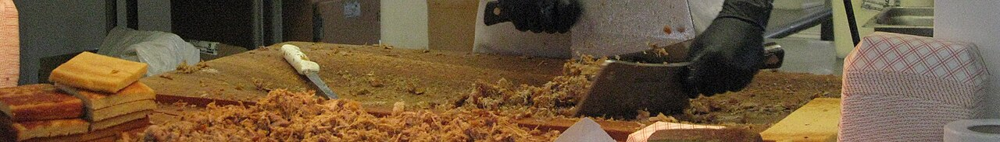

a style · NCEastern North Carolina barbecue
also: Eastern-style · Down East barbecue · whole-hog barbecue · Eastern Carolina barbecue
In the east, 'barbecue' is the meat itself: chopped pork from a whole hog. Nobody says 'pulled pork'.

The whole pig, split and cooked over coals or on a gas or electric cooker, then chopped — skin, ham, shoulder, loin and belly together, 'every part of the hog except the squeal' — and dressed after cooking with a thin sauce of vinegar, salt, black pepper and crushed red pepper. No tomato. It is served with mayonnaise slaw, cornbread or hushpuppies, and often boiled potatoes, on a tray or a sandwich with the slaw on the meat. The style belongs to the Coastal Plain east of Raleigh; Ayden, Goldsboro, Wilson, Kinston, Rocky Mount and Greenville are its towns.
The story Tradition
The whole hog is the older way, across the whole South. Tradition holds — it grew out of plantation and farm life, where a pig was killed, cooked over a trench of hardwood coals through the night and eaten by the whole community at church homecomings, political rallies and hog killings. The cooks at those pits were, for most of two centuries, Black men, enslaved and then paid; Adrian Miller's Black Smoke traces that labor and its erasure from the menus and legends that followed. The vinegar-and-pepper dressing is the sauce of the English colonial kitchen — vinegar was the preservative and the seasoning both — and the absence of tomato is what the east points to when it explains itself against the Piedmont.
The named lineages start in the twentieth century. Bob Melton opened a pit at Rocky Mount in 1924 and was called the 'king of Southern barbecue' by Life magazine. Adam Scott, a Black cook and preacher in Goldsboro, began selling barbecue from his back yard in 1917 and bottled a sauce that still carries his name. The Jones family of Ayden claims a cooking line back to Skilton Dennis, who tradition holds sold barbecue from a wagon in 1830; Pete Jones opened the Skylight Inn in 1947, and after a 1979 National Geographic article called his restaurant 'the barbecue capital of the world' he put a copy of the U.S. Capitol dome on the roof.
The east's argument with the west is a set-piece. Two newspaper columnists ran a mock war over it: Jerry Bledsoe, self-styled 'world's leading, foremost barbecue authority', for Lexington, and Dennis Rogers of the Raleigh News & Observer, 'oracle of the holy grub', for the east — Bledsoe wrote that Rogers 'has ruined any chances of this state being distinguished in its barbecue'. The joke reached the legislature: bills in 2006 to make the Lexington Barbecue Festival the state's official barbecue festival were defeated, and the 2007 compromise named it the official food festival of the Piedmont Triad instead, so that no one style could be called the state's. Readers still take sides, and the two styles are the axis on which every North Carolina barbecue conversation turns.
How it is done Tradition
A hog of 80 to 180 pounds dressed weight is split down the backbone and laid skin-up over the heat, then turned skin-down to crisp at the end; on a wood pit the coals are shoveled in from a burn barrel every half hour through a night. At many eastern pits the cooker is gas or electric, which the state's health rules made easier than a wood pit. The meat is chopped on a block with cleavers, the crisp skin chopped in for texture, and seasoned on the block with the vinegar sauce and salt. A plate is barbecue, slaw and cornbread; a sandwich is barbecue and slaw on a soft bun; a tray is the same without bread.
Today Cited · wp-barbecue-in-north-carolina
The whole-hog pits of the east are the ones the national press writes about: Skylight Inn and Sam Jones BBQ in Pitt County, B's in Greenville, Grady's in Dudley, Wilber's in Goldsboro (reopened 2021 after a 2019 closure), Parker's in Wilson. Many more eastern places cook shoulders or hams rather than the whole animal and are still called eastern by their sauce.
Facts
| state | NC |
|---|---|
| meat | whole hog |
| base | vinegar-pepper |
| fuel | mixed |
| region | Eastern North Carolina, North Carolina |
| where | 35.4700, -77.4200 (region) · OpenStreetMap · open in maps Cited · wp-barbecue-in-north-carolina |
| links | Barbecue in North Carolina — Wikipedia · NCpedia — Barbecue |
| confidence | high · updated 2026-09-16 |
Not to be confused with
- Lexington-style barbecue — Look at the slaw and the sauce. Red slaw and a reddish dip mean Lexington; pale slaw and a clear, thin vinegar sauce mean the east. If the meat has chopped crisp skin through it, it is whole hog.
Its kin
Who points back
Pictures
{kind=link}

{kind=link}
Sources
- Barbecue in North Carolina — Wikipedia · link
- Holy Smoke: The Big Book of North Carolina Barbecue — John Shelton Reed, Dale Volberg Reed, with William McKinney, 2008 · link
- North Carolina Barbecue: Flavored by Time — Bob Garner, 1996
- Black Smoke: African Americans and the United States of Barbecue — Adrian Miller, 2021 · link
- NCpedia — Barbecue (Encyclopedia of North Carolina) · link
- Skylight Inn BBQ — Wikipedia · link
- Melton's Barbecue — Wikipedia · link
Where it came from: Cited a source we name · Harvested pulled from an open dataset · Tradition what the tradition says, hedged · Inference this project's reasoning · Field somebody stood there. This record as JSON.